A Code Beam chegou ao Brasil
Temos o orgulho de anunciar que a Code BEAM enfim chegou ao país de origem do Elixir! A primeira Code BEAM Brasil vai reunir os principais nomes da comunidade Elixirlang e Erlang em um evento 100% online e pela primeira vez com palestras em português.
Com foco em Erlang, Elixir e outras tecnologias relacionadas à plataforma BEAM, as conferências da Code Sync acontecem há mais de 10 anos.
Devido à COVID 19, os eventos físicos foram transferidos para um ambiente virtual, o que nos traz a oportunidade de criar um espaço ainda mais acessível, com a presença de pessoas de diferentes cidades do Brasil e do mundo.

06 - 07 Novembro
09H às 13H GTM-3
Virtual